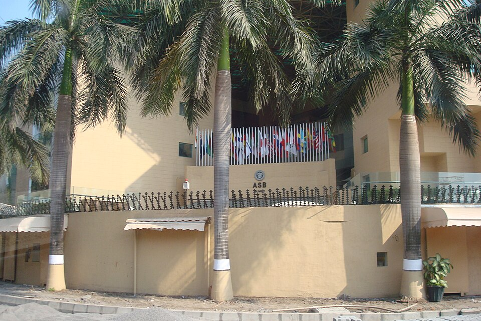

아메리칸 스쿨 오브 봄베이 교사 건물(2009년 촬영 — 이후 캠퍼스 구성이 바뀌었습니다) · 사진: Kshefren / Wikimedia Commons, CC BY-SA 3.0
아메리칸 스쿨 오브 봄베이(American School of Bombay, 인도 뭄바이) — 이름은 도시의 옛 이름, 캠퍼스는 학년마다 다릅니다
⚠️ 검색 주의 — 이 학교 이름의 "봄베이(Bombay)"는 뭄바이의 옛 이름입니다. 도시 표기는 1995년에 뭄바이로 바뀌었지만 학교는 설립 당시의 이름을 그대로 쓰고 있는 것으로 알려져 있습니다. 그래서 "뭄바이 국제학교"로 검색하면 이 학교가 안 걸리고, "봄베이"로 검색하면 1990년대 자료까지 섞여 나옵니다. 영문 약칭 ASB를 함께 넣어 찾으시고, 찾은 글은 주소와 작성 연도부터 확인하세요.
1. 어떤 학교인가 — 영사관 한 교실에서 시작한 학교
아메리칸 스쿨 오브 봄베이는 1981년에 문을 연 것으로 알려진 사립 남녀공학 주간학교입니다. 출발이 특이합니다. 기업이나 재단이 세운 것이 아니라 외국인 학부모들이 미국 영사관 안의 한 교실에서 열두어 명의 학생으로 시작한 것으로 소개됩니다. 이후 1998년에 반드라 쪽 캠퍼스로 옮겼고, 같은 해 무렵부터 IB 과정을 도입한 것으로 전해집니다.
받는 학년은 유아 과정(PreK)부터 12학년까지입니다. 교육과정은 미국식을 바탕에 두고 IB를 함께 쓰는 구조로 안내됩니다.
· 초등(PreK~G5) — IB 초등 과정(PYP)
· G9~G10 — 디플로마를 준비하는 성격의 과정
· G11~G12 — IB 디플로마(DP) 과목
※ 학생 수·학비·연도별 시험 결과처럼 해마다 달라지는 수치는 이 글에 적지 않았습니다. 마지막 2년에 디플로마 전 과정을 이수하는 길과 졸업 요건을 채우며 IB 과목을 골라 듣는 길 중 어느 쪽을 운영하는지는 학교와 연도에 따라 다르니, 11학년 전에 진학 담당 선생님께 직접 확인하세요.
2. 이 글의 핵심 — 캠퍼스가 학년을 따라가고, 그 구성이 바뀌어 왔습니다
이 학교를 알아보실 때 반드시 짚어야 할 것이 캠퍼스입니다. 한 학교지만 학년에 따라 다니는 건물이 다릅니다. 학교 안내 기준으로 초등 과정은 쿠를라 쪽, 중등·고등 과정은 반드라쿠를라 콤플렉스(BKC) 쪽에 있는 것으로 소개됩니다.
더 중요한 것은 그다음입니다. 이 구성은 고정된 적이 없습니다. 오랫동안 한 캠퍼스로 운영되다가 2012년 무렵 두 캠퍼스로, 2019년 무렵 세 캠퍼스 체제로 바뀐 것으로 전해집니다. 그래서 몇 해 전 한국어 후기에 적힌 주소가 지금과 다를 수 있습니다.
| 집을 구하기 전에 확인할 것 | 왜 중요한가 |
|---|---|
| 올해 학년별 캠퍼스 배치 | 검색으로 나오는 주소는 옛 배치일 수 있습니다 |
| 아이가 다음 캠퍼스로 넘어가는 해 | 임차 계약 기간과 어긋나면 이사를 한 번 더 해야 합니다 |
| 형제가 있다면 각자의 캠퍼스 | 등하교 동선이 둘로 갈립니다 |
| 그 주소에 오는 통학 노선 | 뭄바이는 거리보다 시간이 변수입니다 → 통학·스쿨버스 |
정리하면 순서가 이렇습니다. 학교를 먼저 좁히고 → 올해 캠퍼스 배치를 받고 → 그다음에 집을 봅니다. 반대로 하면 선택지가 반으로 줍니다. 특히 BKC는 업무지구라 통근에는 편해도, 초등 자녀의 캠퍼스가 다른 쪽이라면 아침 동선이 완전히 달라집니다.
3. 한국(주재원) 학생이 겪는 어려움 — 구간마다 요구가 바뀝니다
| 구간 | 공부·평가 방식 | 한국 학생이 막히는 곳 |
|---|---|---|
| 초등 (PYP) | 탐구 단원 중심, 과정을 보고 평가 | 진도가 눈에 안 보여 괜찮은 줄 알고 지나갑니다 |
| 중등 (G6~G8) | 과목별 교사 · 기한이 긴 과제가 늘어남 | 회화는 되는데 설명하는 글쓰기에서 점수가 깎입니다 |
| 고등 (G9~G12) | 디플로마 준비 → 외부 시험 비중이 커짐 | G9에 들어와 4년이 한 묶음인 설계를 뒤늦게 압니다 |
세 번째 줄을 조금 더 풀겠습니다. 미국식 고등학교는 G9부터 G12까지가 하나의 졸업 요건으로 묶입니다. 여기에 IB 디플로마까지 얹히면 G9에서 고른 과목이 G11~12의 선택을 좁힙니다. 그래서 발령이 아이의 중3~고1 무렵에 나는 가정은 도착한 학기에 바로 과목 상담을 잡으셔야 합니다. 과목 신청의 구조는 과목 신청(Course Selection)에, 편입 전반은 편입·전학 총정리에 정리해 두었습니다.
초등 구간도 가볍게 보지 마시기 바랍니다. PYP는 단원별 탐구로 굴러가 "몇 단원까지 나갔다"가 성적표에 안 적힙니다. 집에서 괜찮아 보이던 아이가 G6에 올라가 과목 교사가 여럿이 되는 순간 흔들리는 일이 많습니다. 점검 방법은 리딩 레벨 읽는 법과 형성평가·총괄평가에 적어 두었습니다.
4. 그래서 이렇게 준비합니다 — 그리고 뭄바이라는 조건
· ① 영어는 "쓰기"부터 손봅니다. 미국식 수업은 생활 회화가 아니라 근거를 들어 설명하는 문단을 요구합니다.
· ② 수학은 용어와 서술을 함께 봅니다. 한국에서 선행을 해 둔 아이도 영어 용어와 풀이 서술에서 점수를 잃습니다.
· ③ G9 전에 진학 방향을 한 번 정리합니다. 한국·미국·영국 중 어디를 보시는지에 따라 과목 조합이 달라집니다.
· ④ 캠퍼스 배치를 받은 뒤에 집을 봅니다(위 2번 표).
· ⑤ 학교와의 연락 창구를 학기 초에 확인합니다. 중등부터는 담임이 아니라 과목 교사와 어드바이저로 나뉩니다. → 담임·어드바이저
📌 인도는 한국과 시차가 3시간 30분입니다(인도 표준시). 한국 저녁 9시가 뭄바이 오후 5시 30분이라, 아이가 하교한 직후에 화상 수업을 잡을 수 있습니다. 주재원 가정에 꽤 유리한 시간대입니다. 다만 인도는 학년도 시작이 보통 봄이라 한국 학사 일정과 어긋나므로, 과외 계획은 한국 학기가 아니라 현지 학사 일정에 맞춰 세우셔야 합니다. → 출결 규정
인도는 아직 한국어 정보가 적은 지역입니다. 아시아 다른 도시와 견주어 보실 분들은 싱가포르·홍콩·방콕·상하이·베트남 지역글을 함께 보시면 비교가 쉽습니다. 학교 고르는 기준 자체는 입학 준비 총정리에 있습니다.
관련 검색어: 뭄바이국제학교 · 아메리칸스쿨오브봄베이 · 뭄바이국제학교수학과외 · 뭄바이국제학교영어과외 · 인도국제학교과외
정리
아메리칸 스쿨 오브 봄베이는 1981년 미국 영사관의 한 교실에서 시작한 것으로 알려진 뭄바이의 미국식 IB 학교이고, PreK부터 12학년까지를 운영합니다. 알아보실 때 먼저 걸리는 것은 두 가지입니다. 학교 이름이 도시의 옛 이름(봄베이)이라 검색이 갈린다는 점, 그리고 캠퍼스 구성이 여러 번 바뀌어 왔다는 점입니다. 그래서 순서가 학교 → 올해 캠퍼스 배치 → 집이어야 합니다. 공부 쪽에서는 G9부터 G12가 한 묶음이라는 미국식 설계가 가장 중요합니다. 지금 아이가 초등인지 G9 직전인지에 따라 할 일이 전혀 다르니, 30분 무료 수업으로 현재 위치부터 확인해 보시기 바랍니다. (학년 구성·캠퍼스 배치·과정 운영은 바뀔 수 있으니 반드시 학교 요강을 직접 확인하세요.)